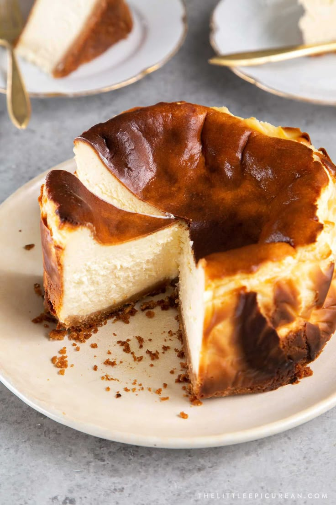

this has cheese and cake
Basque Cheescake

Ingredients:
- Unsalted butter (for pan)
- 2 lb. cream cheese, room temperature
- 1½ cups (300 g) sugar
- 6 large eggs
- 2 cups heavy cream
- 1 tsp. Diamond Crystal or ½ tsp. Morton kosher salt
- 1 tsp. vanilla extract
- ⅓ cup (42 g) all-purpose flour
- Place a rack in middle of oven; preheat to 400°. Brush pan with unsalted butter, then line with 2 overlapping 16x12" sheets of parchment paper, making sure parchment comes at least 2" above top of pan on all sides. Because the parchment needs to be pleated and creased in some areas to fit in pan, you won’t end up with a clean, smooth outer edge to the cake; that’s okay! Place pan on a rimmed baking sheet.
- Beat 2 lb. cream cheese, room temperature, and 1½ cups (300 g) sugar in the bowl of a stand mixer fitted with the paddle attachment on medium-low speed, scraping down sides of the bowl, until very smooth, no lumps remain, and sugar has dissolved, about 2 minutes. (You can also use a large bowl with a hand mixer on medium low-speed, but you may need to continue beating for a few extra minutes to dissolve sugar.)
- Increase speed to medium and add 6 large eggs, one egg at a time, beating until each egg is incorporated, about 15 seconds, before adding the next. Scrape down sides of bowl, then reduce mixer speed to medium-low. Add 2 cups heavy cream, 1 tsp. Diamond Crystal or ½ tsp. Morton kosher salt, and 1 tsp. vanilla extract and beat until combined, about 30 seconds.
- Turn off mixer and sift ⅓ cup (42 g) all-purpose flour evenly over cream cheese mixture using a fine-mesh sieve. Beat on low speed until incorporated, about 15 seconds. Scrape down sides of the bowl (yet again) and continue to beat until batter is very smooth, homogenous, and silky, about 10 seconds.
- Pour batter into prepared pan. Bake cheesecake until deeply golden brown on top and still very jiggly in the center, 60–65 minutes.
- Let cool slightly (cake will collapse drastically as it cools), then unmold. Let cool completely. Carefully peel away parchment from sides of cheesecake. Slice into wedges and serve at room temperature, preferably with a glass of sherry alongside. (Only if you're over 18. I'm pretty sure sherry is alcohol so follow the law pls)